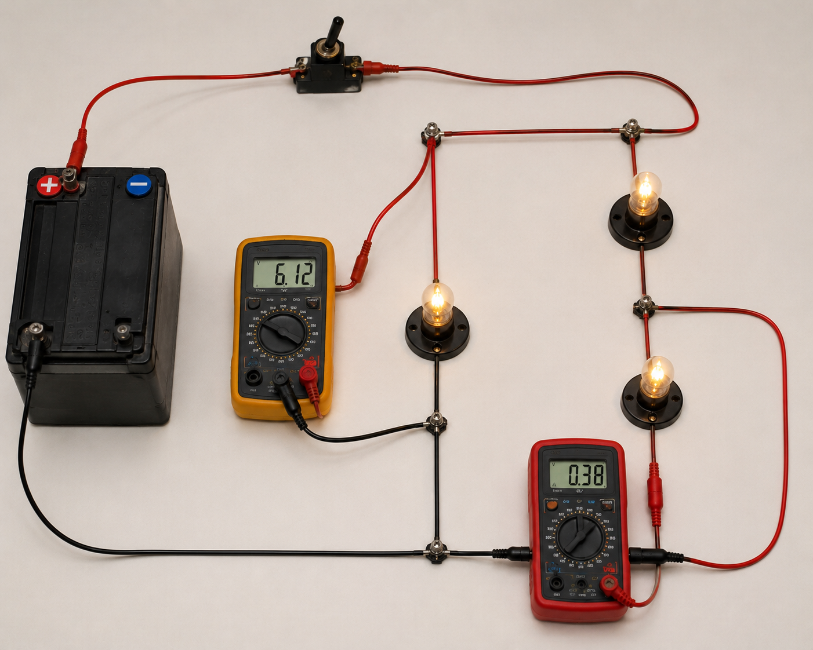
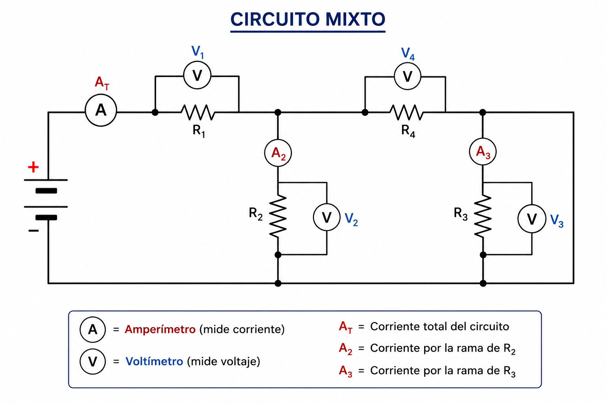

Sistemas Multi Física - Profesor Javier Pereyra
Amperímetros y voltímetros en circuitos mixtos
Clase 8 para aprender dónde se conectan los instrumentos de medición, qué lectura entregan y cómo usarlos para seguir estudiando circuitos mixtos.
1 Idea inicial
En la clase anterior resolvimos circuitos mixtos mirando nodos, ramas y resistencias equivalentes. Ahora vamos a agregar una pregunta más de laboratorio: ¿cómo medimos lo que está pasando?
Para medir corriente usamos un amperímetro. Para medir tensión usamos un voltímetro. La clave no es solamente saber el nombre del instrumento, sino conectarlo en el lugar correcto. Un instrumento mal ubicado no solo mide mal: puede modificar el circuito.
2 Imagen realista del montaje
En una mesa de laboratorio escolar, el amperímetro debe quedar intercalado en el camino de la corriente. El voltímetro, en cambio, se conecta con sus dos puntas a los extremos del elemento o bloque que queremos estudiar.

3 Esquema del circuito mixto con instrumentos
El esquema permite ver la idea sin distracciones. El círculo con A representa un amperímetro y el círculo con V representa un voltímetro. En este circuito mixto aparecen mediciones de corriente total, corrientes de rama y tensiones sobre resistencias particulares.

4 ¿Qué mide cada instrumento?
5 Por qué se conectan así
Un amperímetro ideal tiene resistencia casi nula. Si lo ponemos en serie, apenas modifica el circuito y deja pasar la corriente que queremos medir. Si lo conectamos directamente en paralelo con una fuente o una resistencia, ofrece un camino de resistencia muy baja: eso se parece a un cortocircuito.
Un voltímetro ideal tiene resistencia muy grande. Si lo ponemos en paralelo, toma una corriente muy pequeña y mide la diferencia de potencial entre dos puntos. Si lo ponemos en serie, puede “bloquear” casi toda la corriente y cambiar el funcionamiento del circuito.
6 Reglas rápidas de conexión
| Instrumento | Magnitud | Unidad | Conexión correcta | Idea para recordarlo |
|---|---|---|---|---|
| Amperímetro | Corriente \(I\) | ampere \((A)\) | En serie | Debe ser atravesado por la corriente que mide. |
| Voltímetro | Tensión \(V\) | volt \((V)\) | En paralelo | Compara dos puntos del circuito. |
7 Fórmulas que seguimos usando
Corriente total: si conocemos la tensión de la fuente y la resistencia equivalente, podemos calcular la corriente que leería un amperímetro colocado en serie con todo el circuito.
Tensión en un tramo: si conocemos la corriente de un elemento y su resistencia, podemos anticipar la lectura de un voltímetro conectado en paralelo con ese elemento.
Circuito mixto típico: primero simplificamos el bloque paralelo y luego analizamos qué marcaría cada instrumento.
8 Ejemplo resuelto
Problema: en un circuito mixto, \(R_1=4\,\Omega\) está en serie con un bloque paralelo formado por \(R_2=6\,\Omega\) y \(R_3=3\,\Omega\). La fuente entrega \(12\,V\). ¿Qué marca un amperímetro en serie con todo el circuito? ¿Qué marca un voltímetro conectado en paralelo con \(R_1\)? ¿Y uno conectado entre los nodos del bloque paralelo?
Datos: \(R_1=4\,\Omega\), \(R_2=6\,\Omega\), \(R_3=3\,\Omega\), \(V_T=12\,V\).
Bloque paralelo: \(\frac{1}{R_{23}}=\frac{1}{6\,\Omega}+\frac{1}{3\,\Omega}=\frac{3}{6}\). Entonces \(R_{23}=2\,\Omega\).
Resistencia equivalente: \(R_{eq}=R_1+R_{23}=4\,\Omega+2\,\Omega=6\,\Omega\).
Amperímetro total: \(I_T=\frac{V_T}{R_{eq}}=\frac{12\,V}{6\,\Omega}=2\,A\). Un amperímetro en serie con todo el circuito marcaría \(2\,A\).
Voltímetro en \(R_1\): \(V_1=I_T\cdot R_1=2\,A\cdot4\,\Omega=8\,V\).
Voltímetro en el bloque paralelo: \(V_{23}=12\,V-8\,V=4\,V\). Como \(R_2\) y \(R_3\) están en paralelo, cada rama tiene \(4\,V\).
Interpretación: los instrumentos no inventan datos: leen la misma distribución de corriente y tensión que ya calculamos con circuitos mixtos.
9 Método para resolver lecturas
- Identificar si el instrumento es amperímetro o voltímetro.
- Mirar cómo está conectado: el amperímetro debe estar en serie y el voltímetro en paralelo.
- Simplificar el circuito mixto por etapas, como en la clase anterior.
- Calcular la corriente total con \(I_T=\frac{V_T}{R_{eq}}\).
- Volver al circuito original para hallar tensiones de cada tramo y corrientes de cada rama.
- Comparar el resultado con la ubicación del instrumento y escribir la lectura con unidad.
10 Errores comunes
- Poner el amperímetro como si fuera un voltímetro: conectarlo en paralelo puede producir un camino de resistencia muy baja.
- Poner el voltímetro en serie: puede cambiar mucho la corriente del circuito y dar una lectura sin sentido para el objetivo.
- Confundir \(A\) con \(V\): \(A\) es unidad de corriente; \(V\) es unidad de tensión.
- Medir “la tensión de una corriente”: se mide corriente en un tramo o tensión entre dos puntos. Son preguntas distintas.
- Olvidar los nodos: en paralelo, el voltímetro debe conectarse a los dos nodos que delimitan el elemento o bloque.
11 Actividades
- Observa el esquema de la sección 3. Explica por qué el amperímetro marcado con \(A\) está conectado en serie.
- En el mismo esquema, indica qué tensión mide cada voltímetro marcado con \(V\).
- Un circuito tiene \(R_1=5\,\Omega\) en serie con \(R_2=10\,\Omega\). La fuente es de \(15\,V\). ¿Qué marcaría un amperímetro en serie con todo el circuito?
- Para el circuito anterior, ¿qué marcaría un voltímetro conectado en paralelo con \(R_2\)?
- En un mixto, \(R_1=3\,\Omega\) está en serie con \(R_2=6\,\Omega\) y \(R_3=6\,\Omega\) en paralelo. La fuente es de \(12\,V\). Calcula \(R_{eq}\) y la lectura del amperímetro total.
- Para el circuito del ejercicio 5, calcula la lectura de un voltímetro conectado entre los nodos del bloque paralelo.
- Completa la tabla para el circuito \(R_1+(R_2\parallel R_3)\):
\(V_T\) \(R_1\) \(R_2\) \(R_3\) \(I_T\) \(V_1\) \(V_{23}\) \(10\,V\) \(2\,\Omega\) \(4\,\Omega\) \(4\,\Omega\) \(18\,V\) \(3\,\Omega\) \(6\,\Omega\) \(12\,\Omega\) - Un estudiante conecta un amperímetro en paralelo con una lamparita. Explica por qué esa conexión es peligrosa o incorrecta.
- Un estudiante quiere medir la tensión de una resistencia, pero coloca el voltímetro en serie. ¿Qué debería corregir?
- Dibuja un circuito mixto con tres resistencias, un amperímetro para medir corriente total y dos voltímetros: uno sobre una resistencia y otro sobre un bloque paralelo.
12 Preguntas para pensar
- ¿Por qué un instrumento de medición puede modificar el circuito que intenta medir?
- ¿Qué diferencia hay entre medir la corriente de una rama y medir la tensión entre dos nodos?
- Si dos resistencias están en paralelo, ¿un voltímetro conectado a sus nodos marcaría la misma tensión para ambas? Justifica.
- ¿Por qué en una práctica conviene dibujar primero el esquema antes de conectar los cables reales?